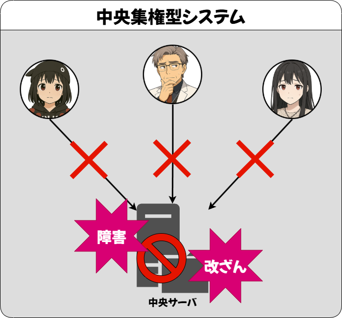
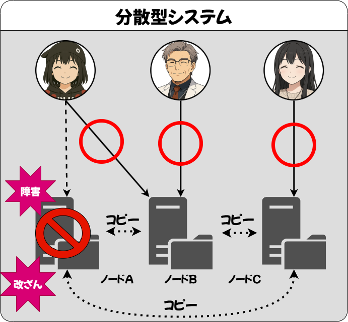
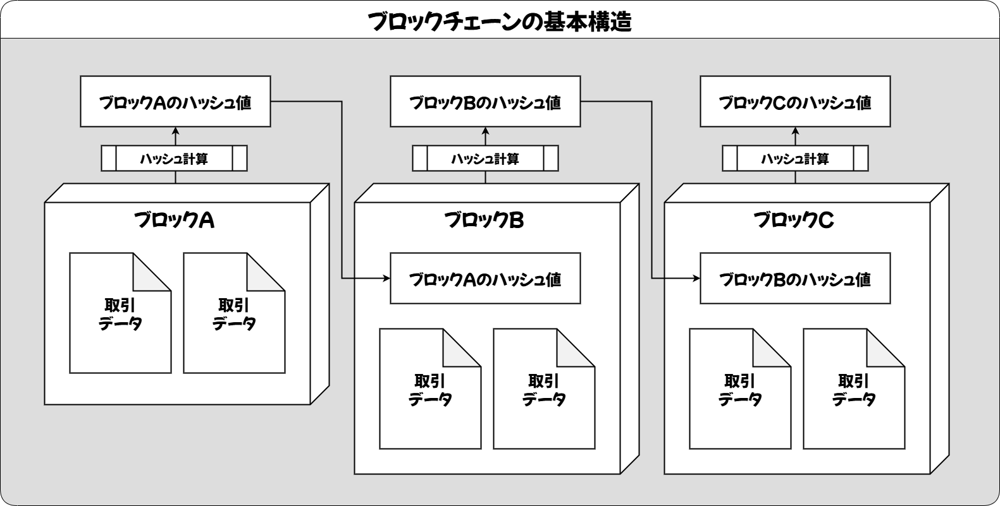
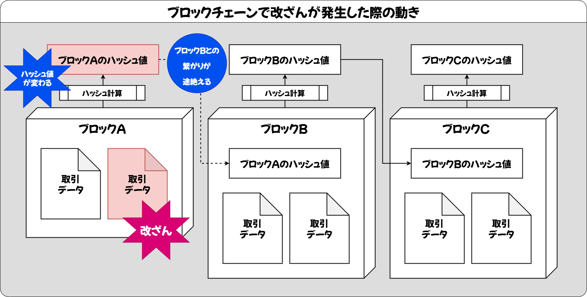

第1章: ブロックチェーンとは何か

江輝
この記事では、私と結さんが、中央集権型システムと分散型システム、そしてそれを応用したブロックチェーン技術について、対話形式でわかりやすく学んでいきます。まずは、インターネット上のデータ保存がどのように行われてきたか、基本的な仕組みから確認していきましょう。
1. 中央集権型システムの特徴と課題

江輝
結さん、私たちが普段使っているネットサービスは、どこか一か所のサーバに情報が集まって管理されていることが多いのをご存知ですか？

結
ええと……たとえばSNSとかネットショップとかですか？なんとなく、企業のサーバーで全部まとめて保存されてるイメージがあります。
江輝
その通りです。このように、特定の企業や組織がすべてのデータと機能を集中管理する仕組みを「中央集権型システム（Centralized System）」と呼びます。システムの制御や判断が一つの場所に集約されていることで、管理がしやすい一方、トラブルに弱いという側面があります。

結
どういうときにトラブルになっちゃうんですか？
江輝
例えば、そのサーバーがハッキングされたり停電や機械トラブルで止まった場合、ユーザーはサービスを一切利用できなくなります。これを「単一障害点（Single Point of Failure）」と呼び、中央集権型の最大の弱点です。


結
あ、全部一箇所に頼ってると、そこがダメになったら全部ダメになっちゃうんですね。
江輝
まさにその通り。特に個人情報や金融データのような重要な情報が狙われやすい現代において、単一障害点を抱えることは大きなリスクになります。
江輝
もちろん、現代の多くの企業サービスでは、サーバーの冗長構成やバックアップ体制、フェイルオーバー、CDNの活用など、障害への対策はしっかり取られています。それでも、極端な集中管理に依存する構造そのものにリスクが残るという点が、分散型の発想の出発点でもあるのです。
2. 分散型システムの概念
江輝
こうした中央集権の問題点に対して考え出されたのが「分散型システム（Distributed System）」です。
結
分散っていうと……データをバラバラにするんですか？

江輝
良い質問ですね。分散型では、複数のノード（コンピュータ）がネットワーク上で互いに連携しながら、全体の仕組みを動かします。データや処理を一か所に集めるのではなく、それぞれのノードが役割を持って、相互に情報をやりとりします。

結
それなら、どこか1つのノードが止まっても、他のノードでカバーできそうですね！
江輝
そうです。これにより、可用性（Availability）や耐障害性が飛躍的に向上します。特に、ノード同士がP2P（ピア・ツー・ピア）でつながることで、中央管理者なしでも情報のやりとりや整合性の確認ができるようになります。


結
自動でお互いにチェックし合ってるような感じなんですね。なんか、チームワークって感じで頼もしいです。
3. ブロックチェーンが実現する分散台帳
江輝
分散型システムをさらに発展させたものが、私たちが学ぼうとしている「ブロックチェーン」です。ブロックチェーンは、分散型ネットワーク上で正確な取引履歴を管理するための台帳（Ledger）のような仕組みです。
結
台帳って、昔のお店で売上を記録してた帳簿みたいなものですか？
江輝
まさにそのイメージです。ブロックチェーンでは、取引データを「ブロック」という単位にまとめ、それぞれのブロックに「ハッシュ」という指紋のような値を付けて、鎖のように順番につなげて記録していきます。

結
指紋？ハッシュってなんですか？
江輝
ハッシュとは、任意のデータから固定長の文字列を作り出す関数のことです。特に次の3つの性質が、ブロックチェーンの安全性を支える重要なポイントとなっています。
| 性質 | 説明 |
|---|---|
| 一方向性 | ハッシュ値から元のデータを復元することがほぼ不可能である |
| 衝突耐性 | 異なる入力から同じハッシュ値が出る確率が極めて低い |
| 高感度（Avalanche） | わずかな入力の違いでも、まったく異なるハッシュ値が生成される |
江輝
たとえば「block」と「blocks」のように、1文字違うだけでもまったく別のハッシュ値になります。これにより、過去の記録がほんの少しでも書き換えられると、すぐにそれが分かる仕組みになっているんです。

結
なるほど！ハッシュはデータが改ざんされていないことを確認するための指紋なんですね！そして、チェーンの途中を改ざんすると、次のブロックが持っている指紋と一致しないから、すぐバレちゃうんですね。
江輝
さらに、ネットワーク上のすべてのノードがこのチェーン全体をコピーして保持しているため、誰か1人が不正をしても、他の多数のノードが正しい記録を保持している状態が保たれます。これが「分散台帳」と呼ばれる理由です。
結
みんなで同じノートを持ってるってことか……それなら安心ですね！
4. まとめと次章予告
江輝
- 中央集権型システムは一元管理がしやすい反面、単一障害点のリスクが高い。
- 分散型システムは可用性と冗長性に優れ、障害に強い構造を実現できる。
- ブロックチェーンは分散型の仕組みを活かし、正確で改ざんが困難なデジタル台帳を提供する。
次章では、このブロックチェーン上で取引がどのように生成され、どのようにして新しいブロックとして台帳に追加されるのか、その一連の流れを体験的に学んでいきます。